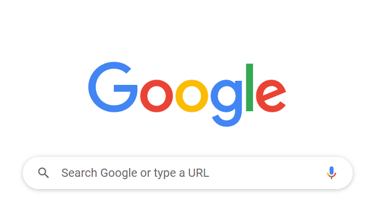

5 projects giúp nâng hạng Front-end Developer
24 tháng 05,2021
Frontend
ReactJS
Javascript
CSS
HTML
Cách nhanh nhất để lên trình
Fron-end
là tự triển những project thật...
5 project thú vị về Front-end development
Dựng bản clone front-end của một website
Luyện skill: HTML, CSS, JavaScript, and/or Bootstrap.
Một cách hay để tìm hiểu một trang web được dụng như thế nào và một số
cách...

Tạp một quiz game JavaScript front-end
Luyện skill: JavaScript
JavaScript là ngôn ngữ lập trình cho phép tạo trang web tương tác. Sử dụng
ngôn ngữ này bạn có thể tạo những element responsive như là menu, video,
hiệu ứng animation,interactive máp và thậm chí game như in-browser. Vậy
tại sao đầu tiên phải build quiz?

Đây là một số bookmark phù hợp cho bạn
-
freeCodeCamp.org - website với free tutorial về lý thuyết,ngôn ngữ và
thực hành về Web development. Họ cũng có một cộng đồng giải đáp những
thắc mắc/câu hỏi.
-
Modern HTML & CSS From the Beginning – Đây là khóa học Udemy của Brad
Traversy. Nó có những thông tin rất hữu ích, chỉ bạn mọi thứ để bắt
đầu với những ngôn ngữ mới.
-
Frontendmentor.io – bạn có thể tìm những challenge vừa sức và nâng cấp
để phát triển kỹ năng trong thời gian rảnh. Cái khó của những
challenge này sẽ xếp từ “junior” đến “advanced”. Ví dụ: